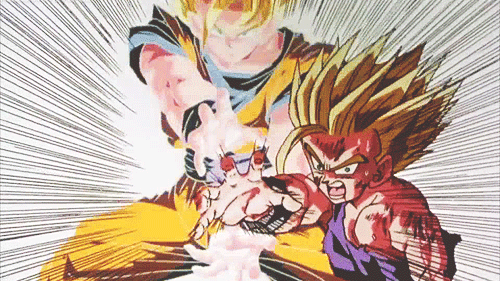

𝑺𝑼𝑷𝑬𝑹 𝑺𝑨𝑰𝒀𝑨𝑱𝑰𝑵 𝟐 (𝑴𝑰 𝑭𝑨𝑽𝑶𝑹𝑰𝑻𝑨)
El Super Saiyajin fase 2 es una evolución directa del primer nivel que aparece durante la saga de Cell. A diferencia del Super Saiyajin común, esta transformación multiplica aún más la fuerza, la velocidad y el control de la energía, mostrando como rasgo principal una electricidad azulada que recorre el aura dorada. Fue Gohan quien lo alcanzó primero en la batalla contra Cell, después de que la furia lo invadiera al ver a los androides y a sus amigos sufrir.


Más adelante, Gokú también dominó este estado y lo utilizó especialmente en la saga de Majin Buu. A diferencia de las versiones musculosas del Super Saiyajin 1, que sacrificaban velocidad, la fase 2 logra un equilibrio perfecto entre poder y movilidad, convirtiéndose en la forma más eficiente para el combate en ese momento de la historia. Esta transformación simboliza un paso más en la superación constante de los Saiyajin y consolidó la idea de que siempre existía un nivel más alto por alcanzar.

𝙀𝙨𝙩𝙖 𝙩𝙧𝙖𝙣𝙨𝙛𝙤𝙧𝙢𝙖𝙘𝙞𝙤𝙣 𝙢𝙪𝙡𝙩𝙞𝙥𝙡𝙞𝙘𝙖 𝙩𝙪 𝙥𝙤𝙙𝙚𝙧 𝙗𝙖𝙨𝙚 𝙚𝙣 𝙪𝙣 𝙭𝟭𝟬𝟬